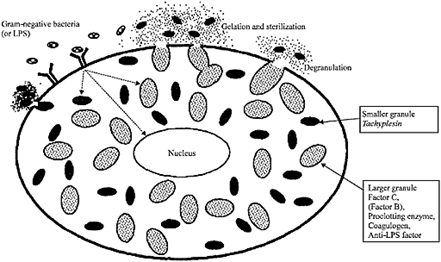

Figure 1. MEMBERHS / EXOPIXEL / PROSTOCK-STUDIO / SHUTTERSTOCK / THE ATLANTIC
Around this time, Jack Levin, a hematologist, joined Dr. Bang’s lab. Together, they figured out that this reaction is a highly sensitive phenomenon and can act as a sensor to detect pyrogenic endotoxins. They soon discovered that it was the crab’s immune response. Being an arthropod, Limulus has a semi-closed circulatory system with open sinuses and is also cold-blooded. So, unlike us, they are more vulnerable to infections, and they can't entrap bacteria in specific areas or increase their body temperature to fight off infections. Hence, they have evolved a rapid yet rash system of detecting bacterial LPS, which is essential since the oceans are awash with microbial life, both pathogenic and beneficial. Unlike our well-endowed adaptive immune system, these crabs have to get by with only the innate immune system with a single type of immune cell called amoebocyte. These cells are obolid and are involved in wound-healing and engulfment of foreign materials. These cells contain specialized granules filled with clotting factors called coalugens that are released on exposure to endotoxins. This results in coagulation of the immediate environment, which can entrap bacteria and prevent further infection. Large incisions/wounds result in larger clots that can act as a makeshift barrier. Dr. Bang observed that these clots are stable enough to even prevent Brownian motion in the enmeshed bacteria.
This simple phenomenon doesn’t seem that paramount until you realize its potential application in the medical and pharmaceutical industry. Any drug/equipment that goes into the human body must be sterile. This includes not only pathogens but also their products like endotoxins and pyrogens. In the past, labs and Drug companies used large colonies of rabbits to detect endotoxins (Rabbit pyrogen test). Rabbits, like humans, are sensitive to endotoxins and produce fever in their presence. Thus, drugs were injected into rabbits to detect endotoxin contaminants. This method was not only expensive but also time-consuming and painful to the animals. Thus, the Limulus amoebocyte lysate (LAL) assay became a popular, albeit expensive, alternative (one liter of this costs around 10 lakh rupees). LAL assay is now the worldwide standard for testing bacterial contamination. The lysate is produced by extracting 30 percentage of total blood volume from the crabs in a non-lethal manner through their large dorsal blood sinus, and the amebocytes are separated for use. Conservationists estimate that even though this non-consensual blood donation is harmless to the crab, it leaves them weak and vulnerable, which also exerts a heavy toll on their ecosystem. LAL is currently the most sensitive and fastest pyrogen test and can produce results within 5 minutes.
In 1995, researchers from the National University of Singapore identified and isolated the gene for the endotoxin-sensitive protein (factor c). The recombinant protein version of this was produced using yeast to create a rapid endotoxin test devoid of Limulus blood. However these synthetic tests are still not widely available, and Limulus blood remains the most popular. Thus, from an antibiotic to the Covid vaccine, you have the blue-bloods to thank!
Sources And Links
- The History of Limulus and Endotoxin | MARINE BIOLOGICAL LABORATORY
- The Benefits of Blue Blood | PBS
- Atlantic horseshoe crab | Wikipedia
- The Race for a Coronavirus Vaccine Runs on Horseshoe Crab Blood | Smithsonian Magazine
- How a Study of Horseshoe Crabs Led to Safer Joint Replacements | UCSF
- Why Horseshoe Crab Blood Is So Valuable | Youtube
- Mechanism in the Clot Formation of Horseshoe Crab Blood during Bacterial Endotoxin Invasion | Science Alert
- Frederik Bang, MD| JOHN HOPKINGS BLOOMBERG SCHOOL of PUBLIC HEALTH
- LAND, M. The optical mechanism of the eye of Limulus. Nature 280, 396–397 (1979). https://doi.org/10.1038/280396a0

Figure 2
Figure 3. Fred Bang

Figure 4. An amebocyte releasing clotting factors

Figure 5

Figure 6. Extraction of the Limulus blood

Figure 7. Jack Levin, MD, carrying out his early studies with horseshoe crabs